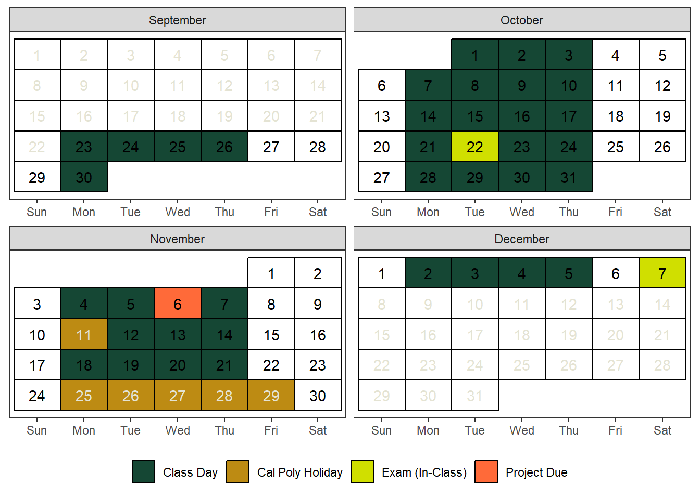

Course Information
Your learning journey begins at Building 186 - Construction Innovations Center. Follow this link to locate the hub of knowledge for your class.
Section 02: MTWR 08:10 AM – 09:00 AM 186-C100
Section 03: MTWR 09:10 AM – 10:00 AM 186-C100
Course Schedule
Prerequisite
Entrance to STAT 218 requires at least one of the following be met:
- Grade of C- or better in MATH 115
- Grade of B or better in MATH 96
- Appropriate placement on the Math Placement Exam.
You should have familiarity with computers and technology (e.g., Internet browsing, word processing, opening/saving files, converting files to PDF format, sending and receiving e-mail, etc.).
Required Materials
Required Textbooks: We will use two textbooks. The former textbook covers fundamental theories, while the latter textbook delves into practical applications.
- Samuels, M.L., Witmer, J.A., and Schaffner, A. A. (2016). Statistics for the Life Sciences, 5th ed., Pearson Education Limited.
- Diez D. M., Çetinkaya-Rundel, M., & Barr, C. D. (2022). OpenIntro Statistics.
Technology/Tools: Calculator, Laptop/Chromebook/iPad Device
Online Resources: We will use Rossman/Chance Applet Collection 2021 of our very own Professors at Cal Poly, Allan Rossman & Beth Chance
Grading and Late Submission Policies
Grading
| Assessment | Percentage |
|---|---|
| Attendance and Participation | 5% |
| Weekly Assignments (Individual) | 10% |
| Midterm | 15% |
| Project Presentation (Group) | 15% |
| Lab + Investigation Assignments (Group) | 20% |
| Final Exam | 35% |
| Total | 100% |
Letter Grades
Your final grades will be determined based on the total points earned. It’s essential to review the letter grades outlined below for a clear understanding of the grading criteria. Please be aware that I will not “round up” grades at the end of the quarter.
| Letter Grade | Points |
|---|---|
| \(A\) | \(93 \le x\) |
| \(A^-\) | \(90 \le x < 93\) |
| \(B^+\) | \(87 \le x < 90\) |
| \(B\) | \(83 \le x < 87\) |
| \(B^-\) | \(80 \le x < 83\) |
| \(C^+\) | \(77 \le x < 80\) |
| \(C\) | \(73 \le x < 77\) |
| \(C^-\) | \(70 \le x < 73\) |
| \(D^+\) | \(67 \le x < 70\) |
| \(D\) | \(63 \le x < 67\) |
| \(D^-\) | \(60 \le x < 63\) |
| \(F\) | \(x < 60\) |
Assessment Types
Our weekly units/topics will follow a pattern and have been designed to give you practice with the concepts. Below you will find brief descriptions of the types of assignments in this course.
Attendance and Participation
Your attendance plays a crucial role in your ability to succeed in every type of assessment conducted in our class, as consistent absences may interrupt your learning and indirectly impact your grades. I will record attendance during every lecture, not only for grading purposes, but also to track your learning progress in this class. In case of recurring absences, I will reach out to understand the reasons and work together to find solutions.
Your active involvement enriches our learning environment and enhances everyone’s experience. Active involvement isn’t about speaking up every day; it’s about actively engaging with the material and activities. I respect that everyone learns differently. Whether you’re comfortable sharing your thoughts in class or prefer a more reserved approach or seek clarification when needed, your participation is valued and will be recognized. As long as you provide these indicators, you will get the full credit from your participation.
In brief, you must be present in our classroom (both physically and mentally) unless you have an “Excusable” Reason for Missing Class and participate in classroom activities. Please contact with me in advance if you are not coming and do your best to catch up what we have done in that day. You can also come to my office hours or schedule a virtual appointment if you have questions about the missing class you had.
Midterm and Final Exams
Exams are to be taken without the use of textbooks or notes. It is expected that you will take exams as per the scheduled times. In cases of extraordinary circumstances like illness, a family loss, please inform me before the examination.
You won’t be required to computer for the exams, but you may see some questions that involve filling in missing information, interpreting provided R outputs, or selecting the appropriate code to complete a task.
Mon, Oct 22: Midterm Exam
Sat, Dec 7: Final Exam
Important
If you miss one of the key assessments (midterm, group project presentation, and/or final exam) and do not contact your instructor or complete a make-up exam within one week of the deadline for these assessments, your final letter grade will initially be recorded as “Incomplete”.
An incomplete grade indicates that you have not finished all the required coursework. Please contact your instructor with me in advance if you miss any of these key assessments and complete the make-up exam to avoid your incomplete grade turning into an F.
Project Presentation
The overarching goal of the project in this course is to empower students to become independent learners. This involves actively engaging with the learning process and taking ownership of your academic journey. You will have the opportunity to present a scientific article related to your major and include the following dimensions: (1) summarize the study, (2) identify its research question(s) and statistical procedures used, and (3) evaluate whether the study effectively communicated its findings. This approach not only enhances your understanding of how Statistics is utilized in your field but also fosters a proactive and self-directed approach to learning. Detailed rubric will be provided as a template on your Canvas page.
Wed, Nov 06: Group Presentations (will be uploaded online)
Important
Your project grade is composed of following components:
Project Slides: 40 points
Project Oral Presentation: 35 points
Project Peer Evaluation: 25 points
Weekly Assignments
You will have individual assignments every week, typically consisting of daily assignments per week. Please upload them collectively, using a format like ‘Week X Assignment Name Lastname’.
These assignments are individual assignments to track your learning progress. You can do these assignments either using your PC/Laptop/iPad/Chromebook or solve them to your notebook. Either way, you should upload them to Canvas. All weekly assignments are due Sundays at 11.59 pm.
Investigation Assignments
There will be 8 investigation assignments, given every Tuesday, to be completed in this course. These assignments will focus on a key statistical concept. You are encouraged to work in groups of up to 3 people and submit one write-up with all group members’ names. If your partner is absent on a given day, feel free to join another group. All investigation assignments are due Thursdays by 11:59 p.m.
Lab Assignments
There will be 8 labs to complete in this course. Most labs should be finished during class time. Make sure to follow the lab write-up instructions carefully.
Lab sessions will be conducted in groups, and lab assignments will also be group assignments. Each group will consist of 2-3 students, who will work together to complete the labs both during and after class. If your partner is absent on a given day, feel free to join another group. All lab assignments are due Sundays at 11:59 p.m.
Important: Please only include the names of group members who actively participated. If a group member is absent, they must either complete the assignment individually or coordinate with their group to finish it together. Feel free to shuffle groups if your partner is absent.
Late Submission Policies
I am using Dr Robinson’s late work policy for this class. I do not want class deadlines to cause you extreme stress or anxiety. I offer 3 “grace days” – days to turn in the assignment late without a penalty.
These can be used ONLY on weekly assignments (individual), lab assignments and investigation assignments (a single group member must be willing to use one of their grace days for the entire group), but NOT exams or the group project. These “grace days” can be used all at once on a single assignment or used on separate assignments throughout the quarter. Simply add a comment on the assignment in Canvas BEFORE THE DEADLINE.
After the expiration of your ‘grace days’, a 10% grade reduction will be applied for each day that the assignment is overdue. Late submissions will not be accepted after one week from the original due date. Resubmitting assignments is not allowed.